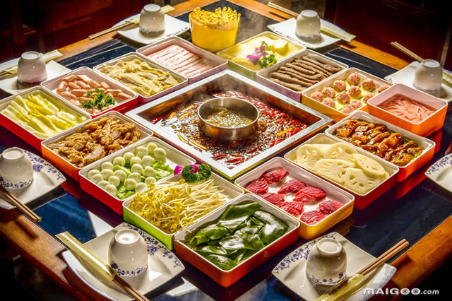
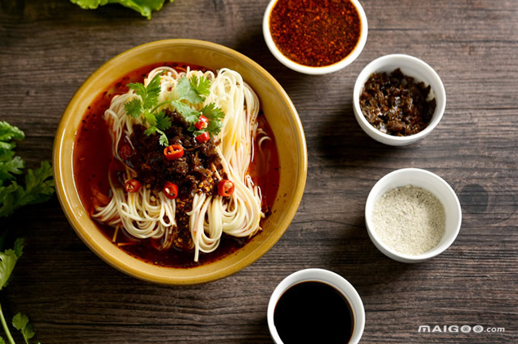
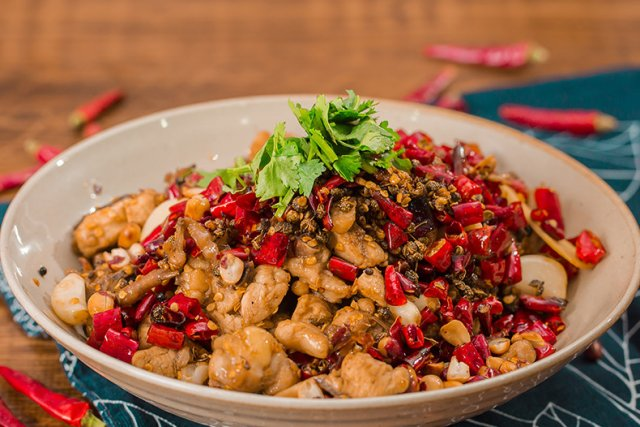
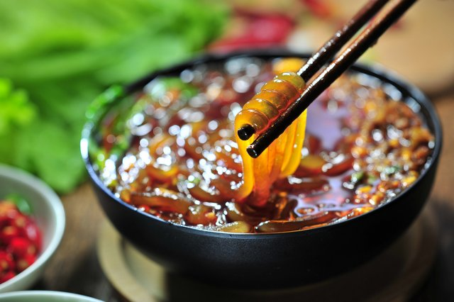
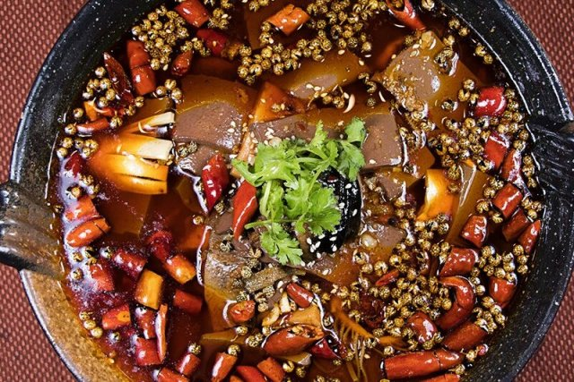
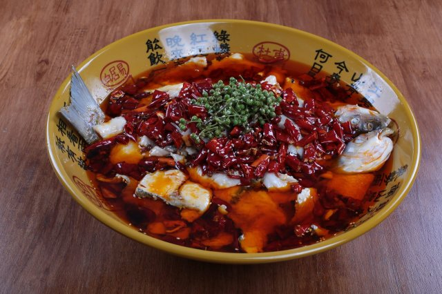
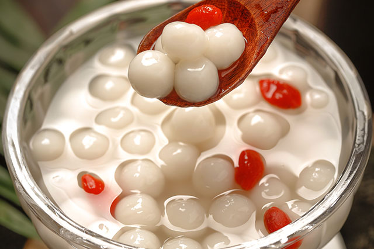
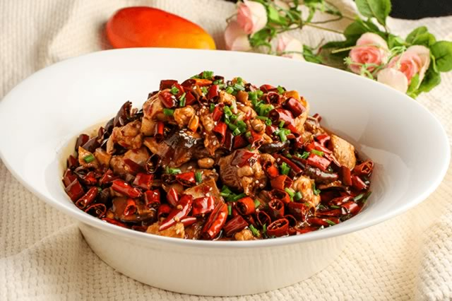
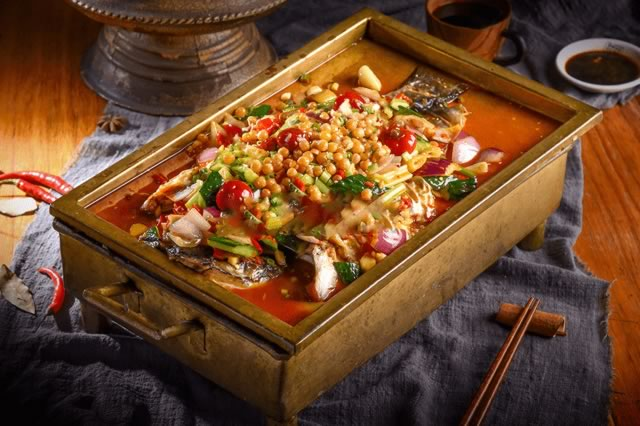
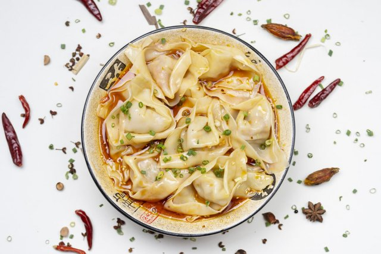

重庆的火锅味道一绝，以善用麻辣著称。另外， 重庆的江湖菜也是有自己的特色，将本地的江湖气息，爽快，耿直的性格加入到重庆菜里面，独有一番风味
重庆十大特色美食
1、重庆火锅

重庆火锅，又称为毛肚火锅或麻辣火锅，是重庆市的地方传统名菜，属于渝菜系。重庆火锅自清道光年间发轫于江湖，历经百载形成了独特的火锅 文化，有麻辣、香气独特、色泽艳丽、味美、菜品种类繁多、底料独特等特点。2016年"重庆火锅"当选为"重庆十大文化符号"之首;重庆毛肚火锅 更是入选由中国烹饪协会主办的"世界发布中国菜活动暨全国省籍地域经典名菜"中重庆榜名单，被评为"中国菜"之重庆十大经典名菜。
2、重庆小面

重庆小面，是重庆四大特色之一，是一款发源于重庆的一种特色传统小吃，属于重庆小吃。重庆小面是指麻辣素面，分汤面和干溜两种类型，麻辣 味型。重庆人对重庆小面的热爱不亚于火锅，亲密度更是有过之而无不及，因其独特口感，以辣闻明，近年来全国知名。重庆小面入选由中国烹 饪协会主办中国地域十大名小吃"重庆榜名单，还被中国旅游协会评定为“"中国金牌旅游小吃"称号。
3、辣子鸡

辣子鸡是一道经典的川渝地区的特色传统名肴，更是川菜辣子系列经典代表菜，属于川菜之下河帮菜系，一般以整鸡为主料，加上葱、干辣椒、花 椒、盐、胡椒、味精等多种材料精制而成，也是四川、重庆的一道有名的家常川菜。辣子鸡因各地的不同制作方法也有不同的特色，此菜辣中有 香、辣而不过，吃起来满头大汗却欲罢不能，令食客流连忘返，深受各地人们的喜爱。重庆辣子鸡尤以歌乐山辣子鸡最为代表，选用家养土仔公鸡 现杀现烹，以保持详嫩肥美，辅料只选用川产上等辣椒、川产茂汶大红袍花椒，这样烹出的菜品，香气四溢，诱人食欲，麻辣酥香，鲜嫩化渣。辣 子鸡更是被中国烹饪协会评选为“中国菜"之重庆十大经典名菜。
4、重庆酸辣粉

重庆酸辣粉是重庆城区广为流传的一种地方传统名小吃，其特点是"麻、辣、鲜、香、酸且油而不腻"”，素有“天下第一粉"之美名。手工制作的主粉 由红薯、豌豆淀粉为主要原料，然后由农家用传统手工漏制。重庆酸辣粉的粉丝劲道弹牙、口味麻辣酸爽、浓香开胃，是深受全国人民喜爱的重庆 地方小吃。重庆酸辣粉入选由中国烹饪协会主办*中国地域十大名小吃重庆榜名单，还被中国旅游协会评定为"中国金牌旅游小吃"称号。
5、毛血旺

毛血旺是重庆市的一道特色名菜，流行于重庆和西南地区，这道菜是将生血旺现烫现吃，且毛肚杂碎为主料，遂得名，已经列入国家标准委员会 《渝菜烹饪标准体系》，也是渝菜江湖菜的鼻祖之一。毛血旺以鸭血为制作主料，烹饪技巧以煮菜为主，其味道麻、辣、鲜、香四味俱全。毛血旺 入选由中国烹饪协会主办的"世界发布中国菜活动暨全国省籍地域经典名菜"中重庆榜名单，被评为"中国菜"之重庆十大经典名菜。
6、水煮鱼

水煮鱼俗称水煮鱼片、水煮活鱼，是中国川渝地区的一道特色名菜，系重庆江湖菜的代表，是重庆一道经典名菜，其口感滑嫩、油而不腻、香辣麻 味。"水煮鱼"原是川菜小河边盐帮菜水煮技法的传统菜，水煮技法经由下河帮川菜派得以发扬光大，使重庆水煮鱼成为川菜水煮系列精品名菜之 一。水煮鱼入选由中国烹饪协会主办的"世界发布中国菜活动暨全国省籍地域经典名菜"中重庆榜名单，被评为"中国菜"之重庆十大经典名菜。
7、山城小汤圆

山城小汤圆是一道重庆市的特色传统小吃，由猪膘油、白糖粉、黑芝麻粉等制作而成，以其小巧玲珑、皮薄馅大、香甜滑糯而著名。山城小汤圆 入选由中国烹饪协会主办"中国地域十大名小吃"重庆榜名单，还被中国旅游协会评定为"中国金牌旅游小吃"称号等。
8、泉水鸡

泉水鸡是重庆一道特色地方名菜，是流行于川渝地区的新派菜之一，属于渝派川菜系，其特点是用料独特、麻辣味足、鲜酥爽口。据传，泉水鸡最 早来源于重庆的南山，因食店后院有一口深井，水源自山泉，早期遂取名"泉水食店”，店家用竹竿接了泉水，引到厨房，将仔鸡洗净了，剁成小 块，放进瓦罐，掺进泉水，放在火上煨着，放入红辣椒，紫花椒，青皮蒜，黄老姜，再丢一把发好的黑香菇，就做成了泉水鸡，后来逐渐成为重庆 一道经典名菜。推荐重庆其他经典名菜:太安鱼、北渡鱼、邮亭螂鱼、酸萝卜老鸭汤等。
9、万州烤鱼

重庆烤鱼，又叫万州烤鱼，是发源于重庆万州的重庆特色传统名菜，属于渝派川菜系，在流传过程中，融合腌、烤、炖三种烹饪工艺技术，充分 借鉴传统川菜及川味火锅用料特点，口味奇绝、营养丰富。其做法是先把鱼剖洗净后平放在铁夹中，放在炉上用木炭烧烤，盛到专用铁盘中，浇上 用牛油、红油、白糖、花椒、辣椒等调味品炒出底料，放上西芹、豆芽等爽口菜即可，口味咸辣。重庆烤鱼被中国烹饪协会评选为"中国菜"之重庆 十大经典名菜，推荐重庆上榜的"中国菜之重庆十大经典名菜"还有粉蒸肉、回锅肉、豆花等。
10、重庆抄手

重庆抄手是重庆的一种美食，饶纯类的一种，皮厚肉多，形状类似金元宝，口感香滑细腻，常配红油高汤加青菜，是重庆人最爱的美食之一。抄手 在川渝的历史至少有1500年以上，是川渝地区对饯钝的一种俗称，对于重庆人来说，吃抄手、小面更是一份忘不了的旧日情怀，旧重庆街头游走的 扁担抄手是每个人都有的童年回忆。推荐重庆地区两家有名抄手:一家是老麻抄手，一家是吴抄手。其中老麻抄手注重的"麻”，分 为清汤、微微麻、微麻、中麻、老麻及特麻6种味道;吴抄手也是以味道取胜，肉质鲜嫩，滋养爽滑。